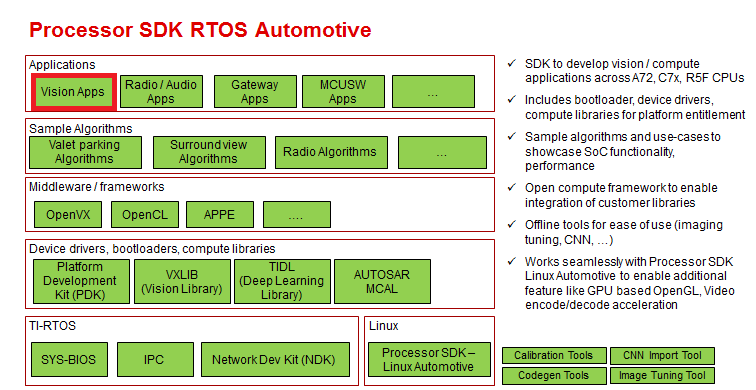

"Vision Apps" integrates different components within Processor SDK RTOS (PSDK RTOS) like SysBIOS, PDK, OpenVX, Algorithms to realize system applications for vision processing like surround view, park assist, front camera, CMS.
"Vision Apps" is component within Processor SDK RTOS as shown in below figure

Vision Apps position within Processor SDK RTOS
This document describes the design of Vision Apps compoment within Processor SDK RTOS
Functional Overview
- "Vision Apps" is the applications layer of Processor SDK RTOS. Most of the applications in "Vision Apps" is built using the OpenVX middleware API. Some applications can be built indepedant of OpenVX APIs
- "Vision Apps" can be built for Embedded Linux, RTOS as well as x86 Linux PC's. Not all applications will work on all operating systems
- The application can be split into a "HOST" application logic and "target" side application nodes. "HOST" application resides on A72 running Linux or RTOS. "target" side OpenVX kernels runs on RTOS.
- Some OpenVX sub graphs are represented as "application library" or "applib". This is done to keep the application code modular and allow reuse of application library code across multiple applications
- "Vision Apps" includes the BIOS, IPC, PDK configuration to build the final executable which runs on a CPU. The build system allows to build multiple CPU binaries with a single "make" invocation
- "Vision Apps" also includes utility, or infrastructure code to interface "TIOVX" with Linux and RTOS. It also includes utilities for console IO, file IO, remote CPU logging, performance measurement. Its makes of PDK, RTOS or other for these and in most this utility API is a wrapper on top existing compoment APIs
Assumptions and Constraints
- Code is written using ANSI C language
- Code uses stdint.h data types.
- Below basic Misra-C rules are followed to allow Misra-C compatibility in future
- No multiple return in a function
- No continue in a loop
- No multiple break in a loop
- The application assumes below basic services are avaiable to it
- printf API which redirects logs to UART console or CCS console
- fopen, fclose, fseek, fread, fwrite stdio.h for file IO to a removeable media like SD card
Features Not Supported
- Not applications will run on all OS's. The user guide will list the compatible OS's for a application
Revision History
| Revision | Date | Author | Description |
| 0.1 | 24 July 2018 | Kedar C | First draft, added top level design, DOF app design |
 1.8.15
1.8.15